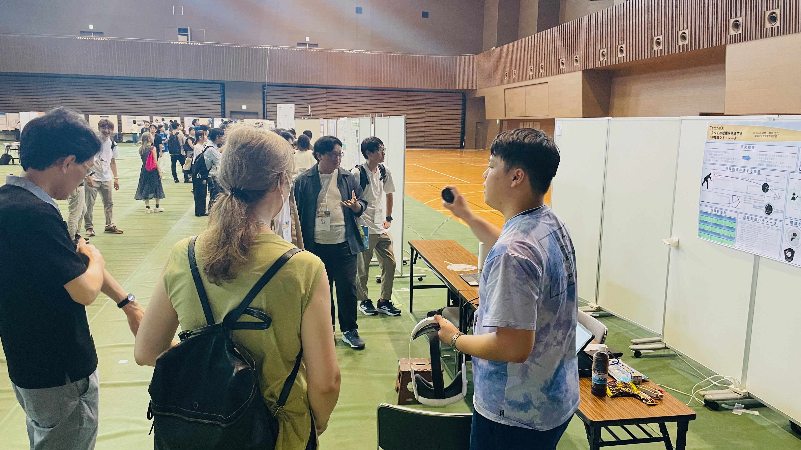
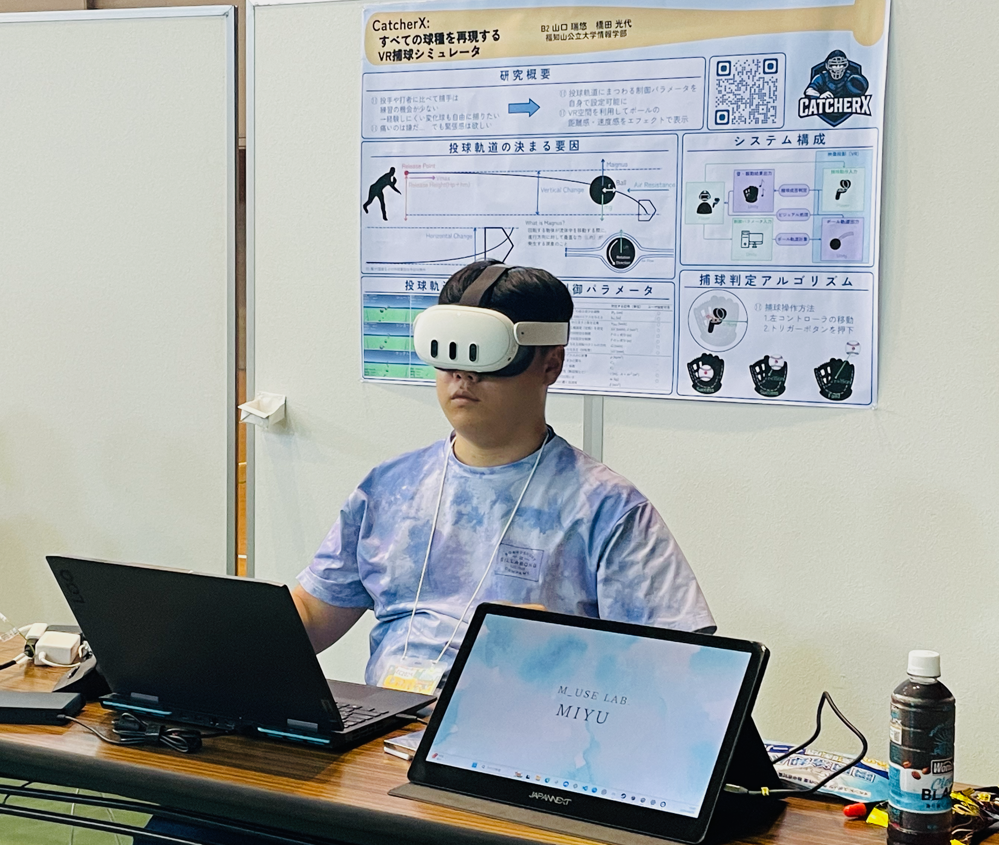
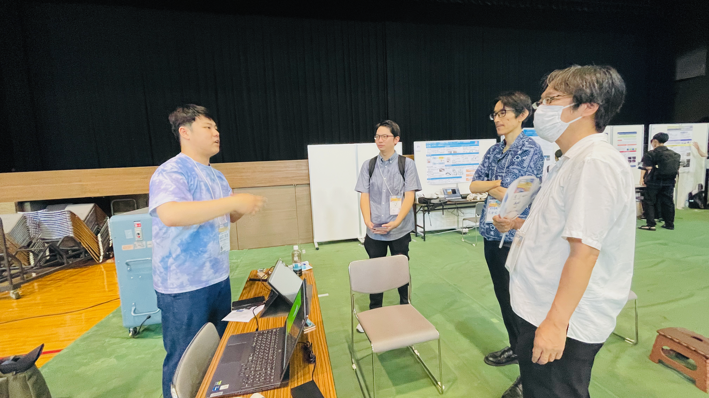
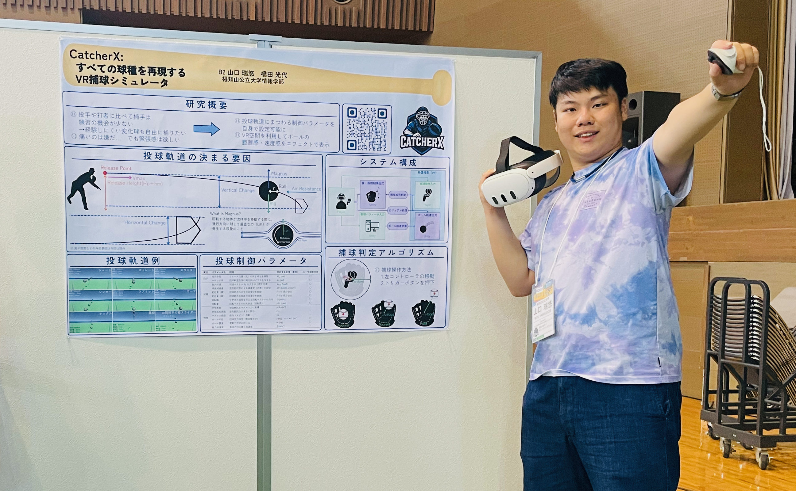

プロフィール

2005年8月30日，三重県鈴鹿市生まれ．
座右の銘：守備こそ最大の攻撃
高校時代に培った感性を原点に，現在は「技術がいかに人の心を動かすか」というエンタテインメントコンピューティングの可能性を探求中．音楽情報処理への興味から始まった私の旅は，VR技術を用いた身体的かつ没入感のある体験創出へとその領域を拡張しています．
福知山公立大学 橋田光代研究室および関西学院大学 片寄晴弘研究室にて，HCI（Human-Computer Interaction）に基づくインタラクティブシステムの研究開発に従事．特にVRを用いた野球捕球シミュレータ「CatcherX」の開発など，デジタルとフィジカルの境界を溶かすような，次世代のエンタテインメント体験のデザインに情熱を注いでいます．
お知らせ
- 2026.07.16 Pinned
- 2026.07.16 Schedule 今後の発表予定を公開しました．
- 2026.05.15 Media 福知山公立大学 2027年度入学案内パンフレットにメイン記事が掲載されます．
経歴
- 2024年3月 三重県立津高等学校 卒業
- 2024年4月 福知山公立大学情報学部 情報学科 入学 同時に橋田光代研究室配属
- 2024年9月 関西学院大学工学部 情報工学課程 片寄晴弘研究室外部研究員
発表論文
受賞歴
- 学術賞 🌟 優秀賞受賞
- 学内表彰
過去の参加学会

過去の対外発表

SNS
ギャラリー




